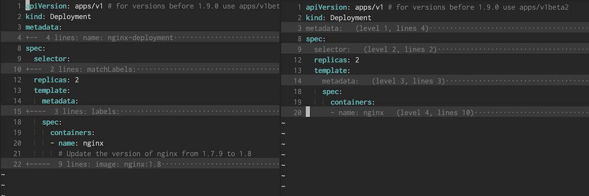

Setting up Vim for YAML editing
In this blog post I'm going to show how to set up Vim for easier YAML editing.
You can scroll down to the end for a summary of all installed plugins and config file changes.
Syntax Highlighting
There's not much to do here. VIM has YAML syntax highlighting built-in and it's great.
There's one thing I want to mention though. A few years back YAML highlighting in Vim was very slow, and there was often a noticeable lag when opening large files. The workaround was to use the vim-yaml plugin for fast syntax highlighting.
Not sure if it's still worth installing I decided to make a performance benchmark. I loaded up a large YAML file (6100 lines) and compared the time:
# default syntax highlighting $ vim gen-istio-cluster.yaml --startuptime default.log $ tail -1 default.log 055.563 # vim-yaml plugin $ vim gen-istio-cluster.yaml --startuptime vimyaml.log $ tail -1 vimyaml.log 060.320
As we can see the default syntax highlighting is just as fast as the plugin and there's no need to install a separate plugin to fix the slow syntax highlighting anymore.
Indentation
Indentation probably the most annoying part about editing YAML files. Large documents with deeply nested blocks are often hard to track and errors are easily made.
YAML documents are required to have a 2 space indentation. However, Vim does not set this by default but it's an easy fix by putting the following line in the vim config:
autocmd FileType yaml setlocal ts=2 sts=2 sw=2 expandtab
We can also setup Indentation guides. Indentation guides are thin vertical lines at each indentation level and useful to help line up nested YAML blocks.
We can display those lines by using the indentLine plugin. I've modified the indentation character to display a thinner line (default is "¦"):
let g:indentLine_char = '⦙'
The result should look like this:

Folding
With folding we can hide parts of the file that are not relevant to our current task.
Vim has built-in support for folding based on the indentation level but the default folding rules make it hard to tell what is folded. This is because the folding starts on the line following the start of a block. To change this we can install the vim-yaml-folds plugin.
Here's a side-by-side comparison of the default folding (left) compared to vim-yaml-folds (right):
To work with folding we need to remember a few keyboard commands. Vimcasts has a great episode on this here. Most of the time I use the following commands:
- za: Toggle current fold
- zR: Expand all folds
There's also a plugin called restore_view which will save the folds for each file. But be aware that this plugin will create an extra file with folding information for each opened document.
Linting
Linting will analyze the code and show any potential errors while we're writing it which helps us catch formatting or syntax errors early on.
To do this in Vim we can use ALE, an asynchronous linting framework that has support for many languages and tools including YAML. To enable YAML linting in ALE we have to install yamllint, a Python-based YAML linter.
Installation instructions are here. On macOS we can install it with Homebrew:
$ brew install yamllint
The default configuration is fairly strict and shows errors in document style such as line length, trailing spaces or comment indentation.
We can modify the configuration to be less strict. Yamllint already comes with a relaxed version of the default config that is a good starting point. The only additional thing I've decided to disable is line length checking.
To do this we open up ~/.config/yamllint/config and
paste the following:
extends: relaxed rules: line-length: disable
I've modified the ALE configuration to change the message format, error symbols and only lint when the file is saved:
let g:ale_echo_msg_format = '[%linter%] %s [%severity%]' let g:ale_sign_error = '✘' let g:ale_sign_warning = '⚠' let g:ale_lint_on_text_changed = 'never'
We can see the errors and warnings on the left side:
Summary
Here's a summary of the plugins, applications and config modifications:
Vim Plugins
Applicatins
Config
In ~/.vimrc or ~/.config/nvim/init.vim
autocmd FileType yaml setlocal ts=2 sts=2 sw=2 expandtab let g:ale_echo_msg_format = '[%linter%] %s [%severity%]' let g:ale_sign_error = '✘' let g:ale_sign_warning = '⚠' let g:ale_lint_on_text_changed = 'never'
In ~/.config/yamllint/config
extends: relaxed rules: line-length: disable